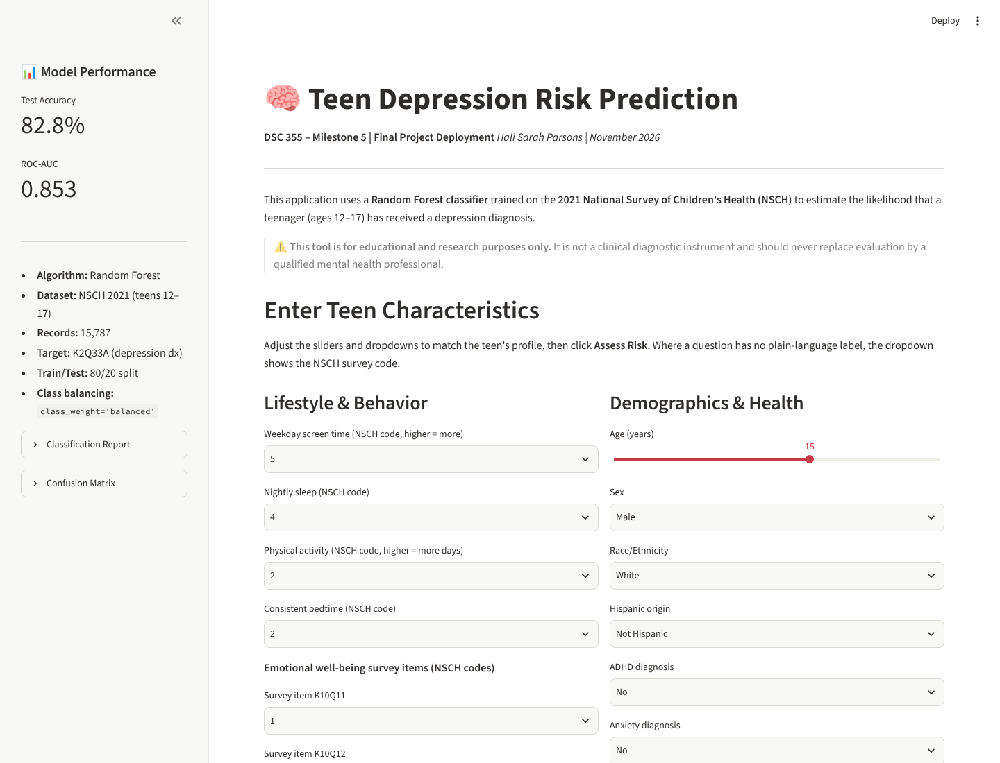
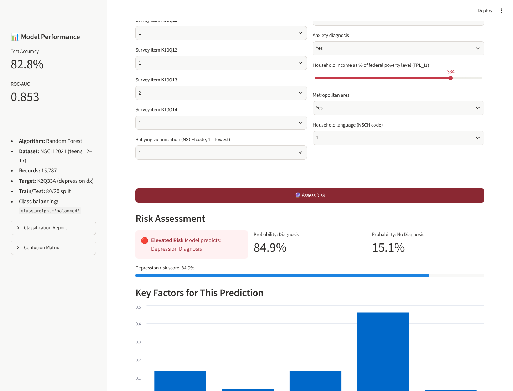

Business Problem
An early signal, never a verdict
Teen depression is common and often goes unnoticed until it is serious. A school counselor, public health researcher or policy analyst may want a quick, consistent read on which combinations of sleep, screen time, emotional well-being, social stress and health history tend to go along with a depression diagnosis.
The goal was a tool that turns a trained model into something a non-programmer can use, with clear limits stated up front: it is a research and education tool, not a diagnostic instrument.
Research question: Can survey-style information about a teen’s lifestyle, emotional well-being, demographics and health history predict whether they have been diagnosed with depression?
Methods
Five milestones, one pipeline
Cleaning survey data
The target arrived coded 1 / 2 and was recoded to 1 / 0. Survey sentinel codes (90, 95, 99, meaning “not applicable”) hiding inside the 1–4 rating columns were turned into missing values and filled with column medians, instead of being treated as real answers.
Handling class imbalance
Only about 22% of teens carry a diagnosis, so accuracy flatters any model that leans toward “no.” Balanced class weights are a trade-off, not a free win: in a side-by-side rerun, recall on diagnosed teens rose from 0.51 to 0.67 while precision fell from 0.82 to 0.59 (accuracy 86.8% to 82.8%, ROC-AUC unchanged). I kept the balanced version because missing a diagnosed teen costs more than a false alarm in a screening signal.
Choosing the model
Random Forest was compared with logistic regression and a single decision tree. It handles the mix of ordinal and categorical survey features without scaling, can capture interactions like anxiety plus poor sleep, and gives feature importances stakeholders can read. On the final 18 features, logistic regression scores about the same, so the extra complexity buys little accuracy. Final settings: 200 trees, max depth 10, at least 5 samples per leaf.
Deploying it
The model is wrapped in a Streamlit app that trains once per session (cached), encodes inputs exactly as the training data was encoded, and returns a prediction, both class probabilities, a risk bar and the model-wide feature importances. Testing the deployed app showed its inputs weren’t reaching the model correctly, which was fixed and re-verified (see The App).
A simple model matched the Random Forest
ROC-AUC on the 20% test split, final 18 features, higher is betterTest accuracy was 82.8%. Because 78% of teens are not diagnosed, always answering “no” would already score about 78%. The Random Forest finds 67% of diagnosed teens (recall) with 59% precision, so ROC-AUC and recall are the numbers that show it learned something.
Results
It learned something real, and I checked what it hid
On teens it had never seen, the final Random Forest reached an ROC-AUC of 0.853 and 82.8% accuracy. Rerunning the comparison on the final features showed logistic regression doing just as well, a useful reminder that a more complex model isn’t automatically a better one.
The habit this project built: report the metric that matches the problem, and say plainly what the headline number hides.
One feature carried almost half the model
Share of Random Forest feature importanceWhy it matters: anxiety and depression are highly comorbid in adolescents. A tool that treats them as separate risks misses how connected teen mental health is, and a model leaning this hard on one diagnosis should be read with that in mind.
The Bigger Finding
What the model leans on matters as much as its score
The anxiety diagnosis (survey item K2Q32A) accounted for about 46% of the model’s decisions, well ahead of bullying (14%) and ADHD diagnosis (14%). That fits a well-known clinical pattern, and it is also a caution: the model is partly reading one diagnosis to predict another.
Importances are model-wide, not specific to one teen. For individual-level explanations, the next step is SHAP values.
Recommendations & Ethical Considerations
Who this affects — and where it could go wrong
Not a diagnostic tool
The app opens with that warning. It is for education and research, and a prediction should never replace evaluation by a qualified mental health professional. The target is also a survey-reported diagnosis, not a clinical assessment.
Bias audit first
Before any real-world use, the model needs a formal bias audit broken out by race, sex and poverty level, so it doesn’t flag some groups more than others for reasons unrelated to need.
Privacy and security
Student-level data would require a secure, HIPAA-compliant host with role-based access, not a laptop. The training data here is a public survey, so no individual is exposed.
Keep it current
Retrain on each new annual NSCH release and run calibration checks so predicted probabilities keep matching observed rates, and add instance-level SHAP explanations so a counselor can see why.
Conclusion
Back to the real question
Survey data about sleep, screens, emotional well-being, bullying and health history can predict a teen’s depression diagnosis well above chance. The harder lessons were about everything around the model: the codes hiding in the data, the imbalance hiding in the accuracy, and the care needed before anyone acts on a score.
What I learned: survey data needs more preprocessing than it appears to; class imbalance makes accuracy misleading and class weights trade precision for recall; and a deployed model must be tested end to end, because mine initially ignored its own inputs.
The App
Run it yourself
The app is a single Streamlit script. You enter a teen’s characteristics with sliders and dropdowns, click Assess Risk, and get the prediction, both class probabilities, a risk bar and the model’s top factors. The sidebar shows test accuracy, ROC-AUC, the classification report and the confusion matrix.




To run it
Install the libraries with pip install streamlit scikit-learn pandas, put the NSCH teen file (nsch_2021_teens.csv) beside the script, and start it with streamlit run app_week11.py.
What testing the app caught
The first deployed version looked up answers as “1” while training had encoded them as “1.0”, so every categorical answer silently fell back to a default and the prediction never changed. The form also offered hours and 1–4 scales where the survey stores coded values. Both are fixed in the downloadable script, and I confirmed the output now moves with the inputs.
About the data
The survey file isn’t redistributed here. NSCH data is published by the U.S. Census Bureau at census.gov/programs-surveys/nsch; the script keeps the target plus the 18 features listed above.